Quiz de culture générale sur mobile
Un quiz qui tient dans une pause. Un catalogue qui tient la route.
54 885 questions sur 17 univers. Solo, défi du jour, ou défi à un ami.
Fonctionnalités
Une expérience de quiz construite comme un vrai jeu live
Rythme mobile natif
Lancement rapide, lecture claire, parties courtes et rejouables.
Compétition continue
Classements journaliers, hebdomadaires, mensuels et annuels.
Progression tangible
Badges, profil, récompenses et inventaire évoluent à chaque session.
Modes complémentaires
Classique, Blitz et Survie pour varier rythme, pression et stratégie.
Défiez vos amis
Ajoutez vos amis, lancez un défi sur le thème de votre choix, puis rejouez la revanche.
Boucle claire
Vous jouez, vous marquez, vous montez, vous revenez avec un objectif précis.
Aperçu
À quoi ressemble une partie
Des captures réelles de l'application, pas des maquettes.

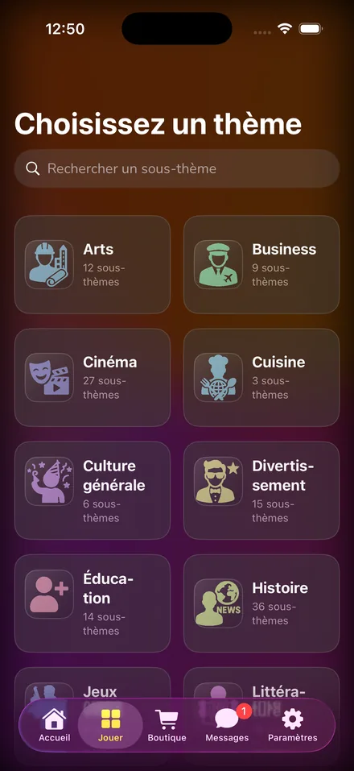
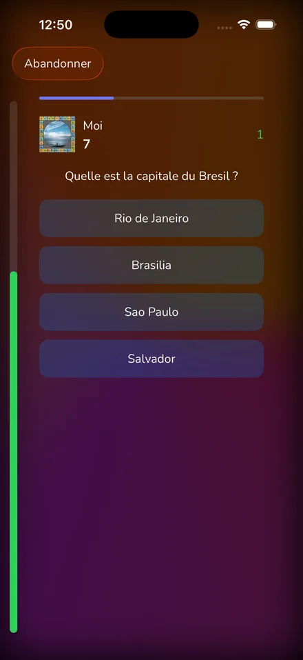
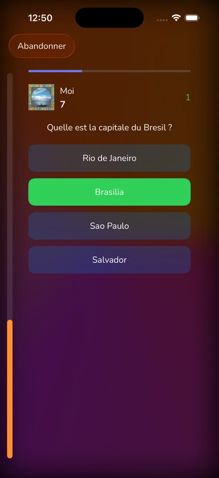
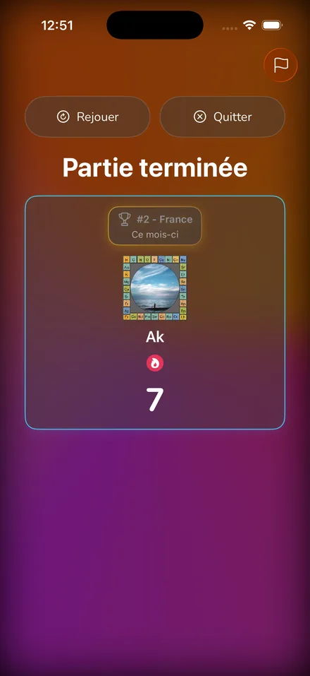
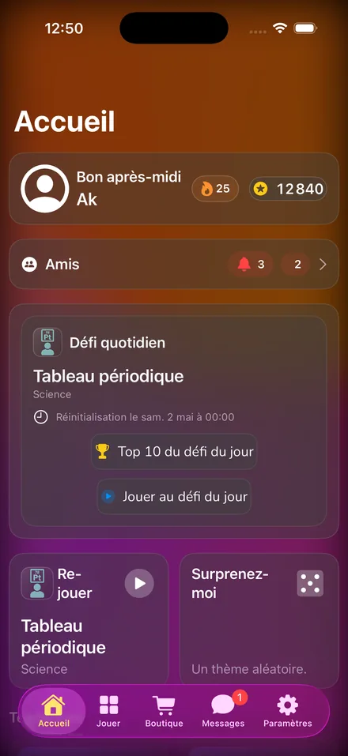
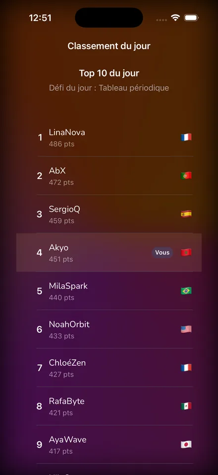
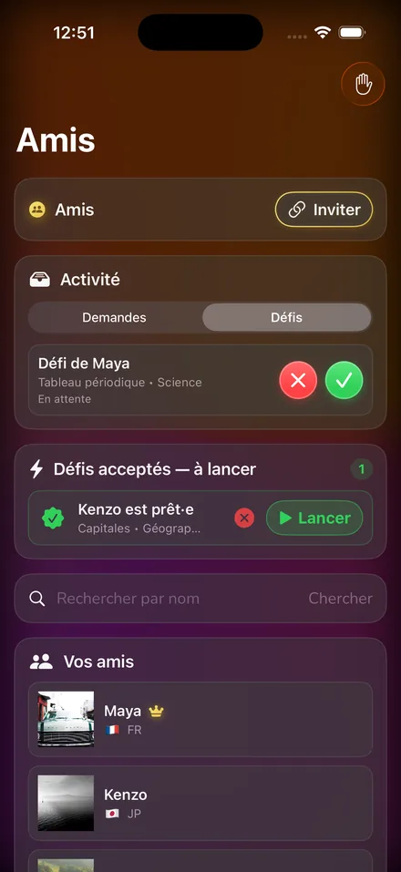
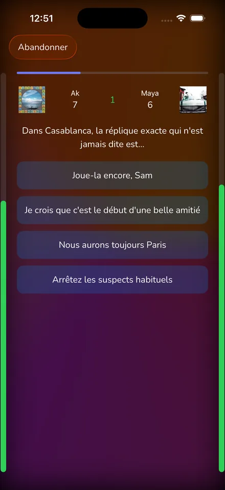
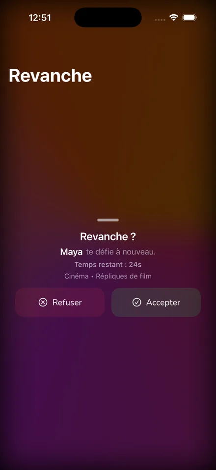
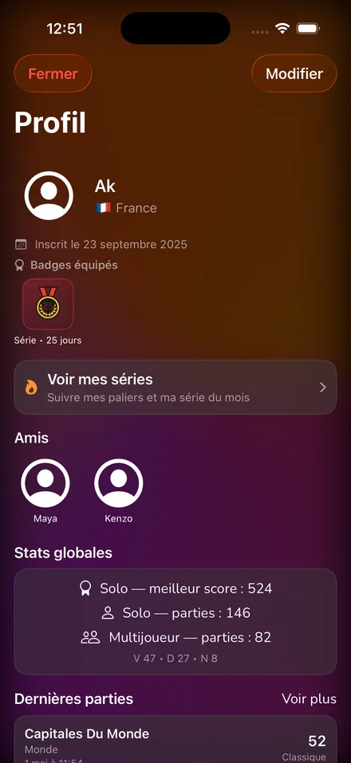
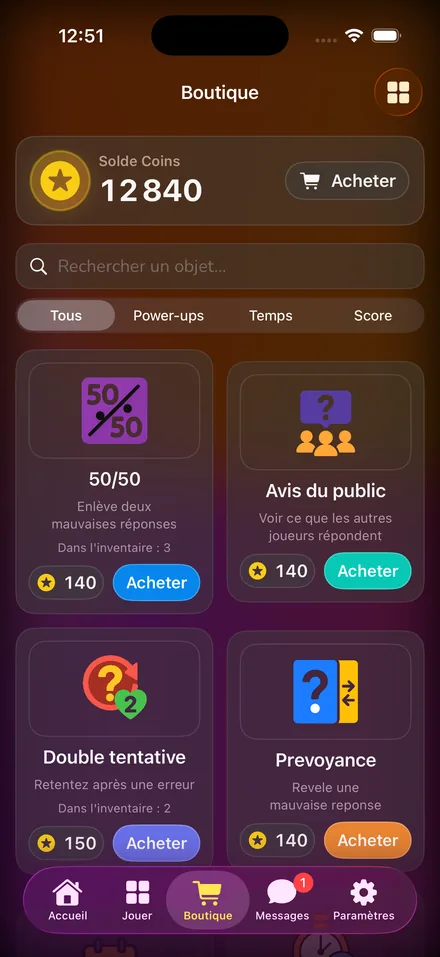
Vérification
Pourquoi nos questions restent justes
La plainte la plus fréquente contre les apps de quiz n'est pas la difficulté. C'est la mauvaise réponse. Nous avons construit Quiz Tempo autour de ce problème.
Relues, pas improvisées
Nos questions passent par un moteur de vérification: réponses recoupées, sources contrôlées, doublons écartés. Thème par thème, en continu.
Corrigées, jamais supprimées
Une question fausse est réparée, pas jetée. Le catalogue gagne en qualité sans jamais perdre en volume.
Actualisées
Un transfert, un record battu, une élection: la bonne réponse d'hier devient fausse aujourd'hui. Nous repassons dessus.
Thèmes
Nos guides par univers, pour choisir où commencer
Quiz Histoire
Antiquité, révolutions, guerres mondiales, grandes figures et repères chronologiques solides.
Quiz Cinéma
Films cultes, réalisateurs, Oscars, répliques iconiques et quiz cinéma par décennie.
Quiz Sports
Football, NBA, F1, Jeux Olympiques, records et moments qui ont marqué le sport.
Quiz Science
Physique, chimie, biologie, espace, inventions et culture scientifique appliquée.
Quiz Musique
Hits par époque, artistes majeurs, blind test, pop culture et références intergénérationnelles.
Quiz Culture Générale
Un format transversal pour progresser partout: histoire, science, géographie, cinéma et société.
FAQ
Questions fréquentes
Quiz Tempo est-il gratuit ?
Oui. Le jeu est gratuit et financé par la publicité. L'abonnement premium, facultatif, retire les publicités et débloque des bonus supplémentaires.
Sur quelles plateformes puis-je jouer ?
Sur iPhone et iPad à partir d'iOS 17, et sur Android à partir de la version 8. Le jeu est disponible en français, en anglais et en espagnol.
Puis-je jouer seul ou avec mes amis ?
Les deux. Le solo, le défi du jour et les classements se jouent sans personne d'autre. Vous pouvez aussi ajouter des amis et leur envoyer un défi sur le thème de votre choix.
D'où viennent les questions ?
Elles sont écrites, puis relues par un moteur de vérification qui recoupe les réponses, contrôle les sources et repère les questions devenues fausses avec le temps. Une question erronée est corrigée, jamais supprimée.
Le jeu évolue-t-il régulièrement ?
Le défi quotidien change de thème chaque jour, et les classements journaliers, hebdomadaires, mensuels et annuels se renouvellent en continu.
Communauté
Retrouve Quiz Tempo sur les réseaux
Coulisses, nouveautés produit et extraits de gameplay.